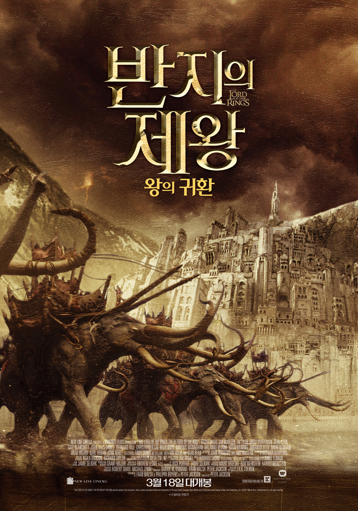

모든 힘을 지배할 악의 군주 ‘사우론’의 절대반지가 깨어나고 악의 세력이 세상을 지배해가며 중간계는 대혼란에 처한다. 호빗 ‘프로도’와 그의 친구들, 엘프 ‘레골라스’, 인간 전사 ‘아라곤’과 ‘보로미르’ 드워프 ‘김리’ 그리고 마법사 ‘간달프’로 구성된 반지원정대는 평화를 지키기 위해 절대반지를 파괴할 유일한 방법인 반지가 만들어진 모르도르를 향해 목숨을 건 여정을 떠난다. 한편, 점점 세력을 넓혀온 사우론과의 피할 수 없는 전쟁을 앞둔 반지원정대는 드디어 거대한 최후의 전쟁을 시작하는데... more information